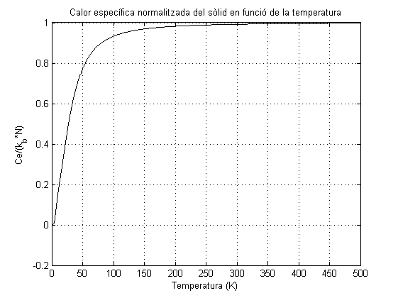

% CÀLCUL CALOR ESPECÍFIC AMB MODEL DEL SÓLID DE DEBYE EN 1D clear all; close all; % Definició de les constants. c = 4.2906*10^(-10); % Paràmetre de xarxa. a = sqrt(3)*c/2; % Distància entre enllaç. vs = 3200; % Velocitat del so. m = 4*10^(-26); % Massa. C = m*(vs/a)^2; % Constant elàstica. h = 6.62606957*10^(-34); % Constant de Planck. h_d = h/(2*pi); % Constant de Dirac. k_b = 1.38064852*10^(-23); % Constant de Boltzmann. % Definició dels paràmetres inicials. N = 7; % Número d'àtoms. L = N*a; % Longitud del sòlid. % Definició dels paràmetres dels modes normals. phi = zeros(1,N); % Fase inicial. k = [0:2*pi/L:2*pi/a] - (pi/a); % Número d'ona. k = k(1:end-1); % Traiem l'últim que és igual al primer. w0 = sqrt(C/m); % Freqüència base. w = 2.*w0.*abs(sin(k.*a./2)); % Relació de dispersió d'ona. % Calculem ara la capacitat calorífica de la cadena. Per fer-ho cal derivar % l'energia respecte la temperatura. Com que tan sols l'energia de cada mode depèn de la % temperatura, la derivem i calculem C. Et = []; % Vector d'energies totals del sistema. dT = 0.01; % Diferencial de temperatura. for T = 0:dT:500; % Càlcul de C per diferents temperatures. % Tornem a calcular les variables per a una T qualsevol. betap = 1/(k_b*T); % Factor beta n_b = 1./(exp(betap.*h_d.*w) - 1); % Factor d'ocupació de Bose. E = h_d.*w.*(n_b + 1/2); % Energia per a frequència. A = sqrt(2.*E./C); % Amplitud. E = 0; % Energia del sistema per a una T concreta. t = 5*10^(-16); for n = 0:N-1 % Calculem energia de cada àtom. % Càlcul de l'Energia Cinètica. xn = n*a; v = 0; for nn = 1:N v = v - A(nn)*w(nn)*sin(w(nn)*t - k(nn)*xn + phi(nn)); % Velocitat de la partícula. end K = 1/2*m*v^2; % Càlcul de l'Energia Potencial. x = 0; for nn = 1:N x = x + A(nn)*cos(w(nn)*t - k(nn)*xn + phi(nn)) ; % Velocitat de la partícula. end U = 1/2*C*x^2; % Energia Total E = E + K + U; % Sumem a l'energia global del sistema. end Et = [Et E/(k_b*N^2)]; % Actualitzem el vector d'energies. end T = [0:dT:500]; Ce = (Et(2:end) - Et(1:end-1)).*(1/dT); % Vector de calors específiques. % Representem la calor específica en funció de la temperatura. figure(1) plot(T(1:end-1),Ce, 'k') xlabel('Temperatura (K)') ylabel('Ce/(k_b*N)') title('Calor específica normalitzada del sòlid en funció de la temperatura') grid on;